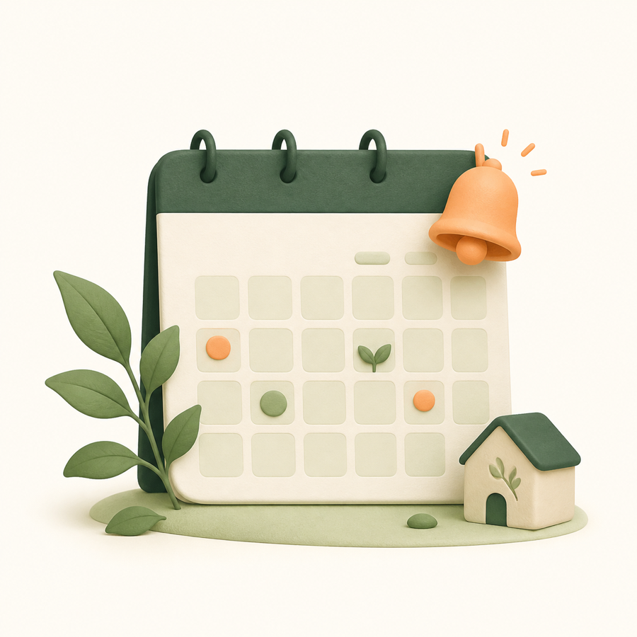
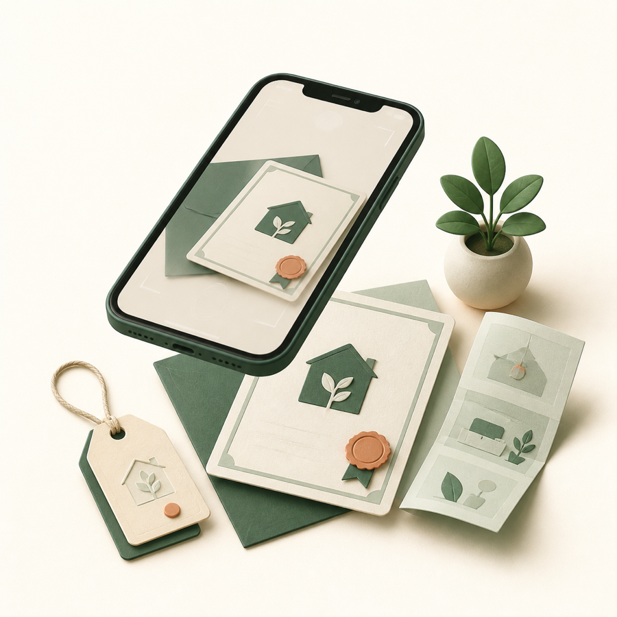
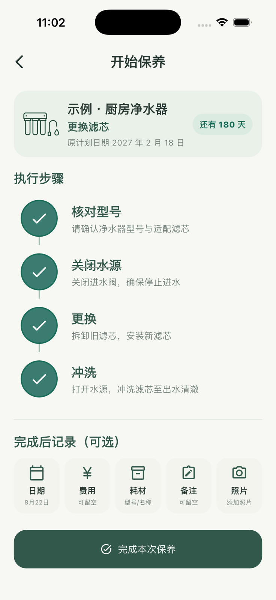
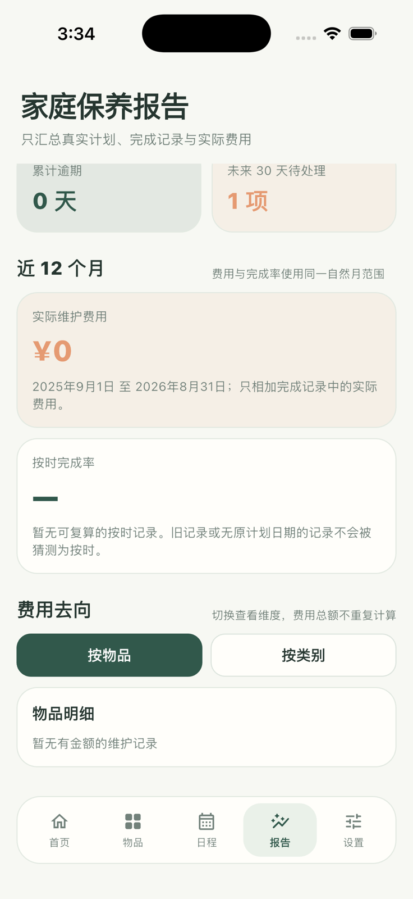

01建立物品档案
先把散落的信息收在一起
记录空间、品牌、型号、购买与保修日期；说明书、保修卡和凭证照片也能留在物品下。
LAURUS 把家庭物品、保养计划、执行步骤、实际费用与照片整理成一份可持续维护的档案。到期时照着做，完成后自动进入下一周期。

把模糊的“记得保养”，拆成今天能执行、以后能回看的清晰流程。
记录空间、品牌、型号、购买与保修日期；说明书、保修卡和凭证照片也能留在物品下。
从可编辑模板开始，或自定义周期、提前提醒天数和执行步骤；同一物品可以拥有多项计划。

可选记录实际费用、耗材型号、备注和保养前后照片；完成记录进入生命周期，并生成下一次日期。

LAURUS 围绕物品的整个保养周期组织信息，而不是把日期、照片和费用留在不同 App 里。
滤芯更换、管路清洁、年度检查可以各自拥有周期、步骤和提醒，不再挤在一条模糊备注里。
不授权通知也能创建物品、安排计划和完成保养；开启后按各计划的提前天数发送本地提醒。
只有你主动导出 CSV、创建 ZIP 备份或从系统分享面板发送文件时，相应内容才会离开 App 沙盒。
阅读完整隐私政策 →每次完成都进入物品生命周期。以后查看时，能知道做了什么、花了多少、用了哪个型号，而不是只剩一个打勾。
可主动导出 CSV，或创建包含物品、记录与照片的完整 ZIP 备份；需要时再从备份恢复。
以下画面来自当前 App 的实际运行界面，示例数据会明确标记。


联系时请附上设备型号、系统版本、App 版本以及问题发生前的操作步骤；请不要发送包含家庭地址、票据或其他敏感信息的截图。
在 App 的“设置”中检查通知状态，并确认对应计划已启用且有下一次日期。不授权通知不会影响物品、计划或完成记录。
在“设置 → 完整备份”创建 LAURUS-backup.zip，并保存到你能再次访问的位置。在目标设备选择“恢复备份”；旧版备份 ZIP 也可恢复。恢复会替换该设备当前档案，请先保留现有备份。
首次进入时会自动创建一条示例净水器，帮助你了解物品档案和保养计划；之后无需在设置中单独管理。
可以。照片是可选记录；你仍可创建物品、执行步骤和保存维护结果。需要添加照片时，可在系统设置中重新开启相应权限。